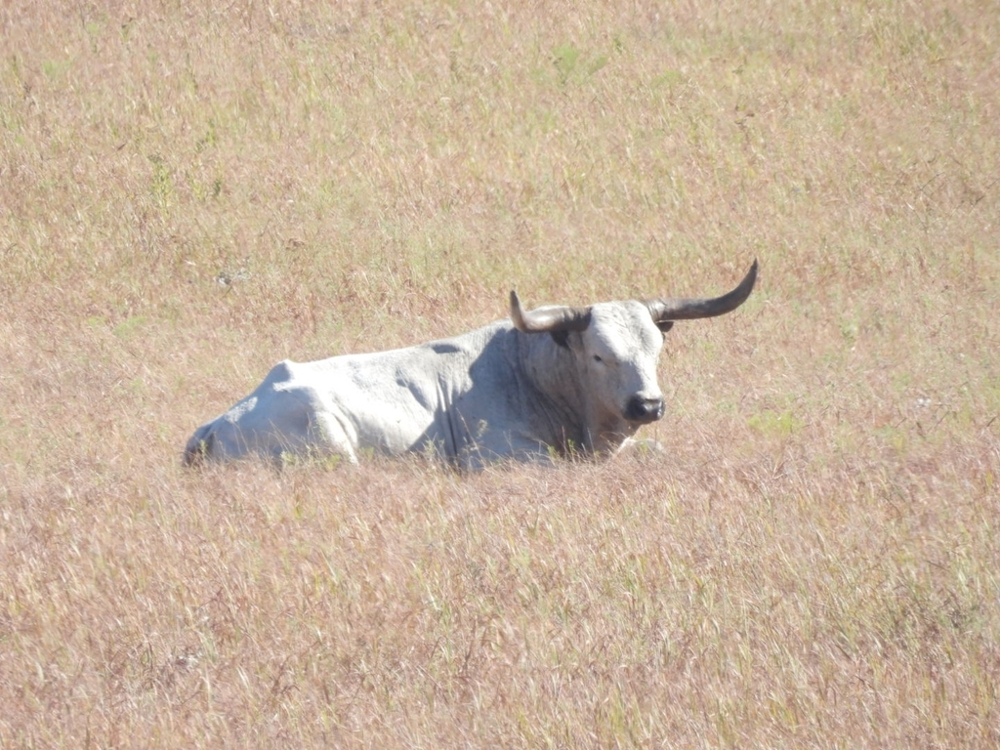
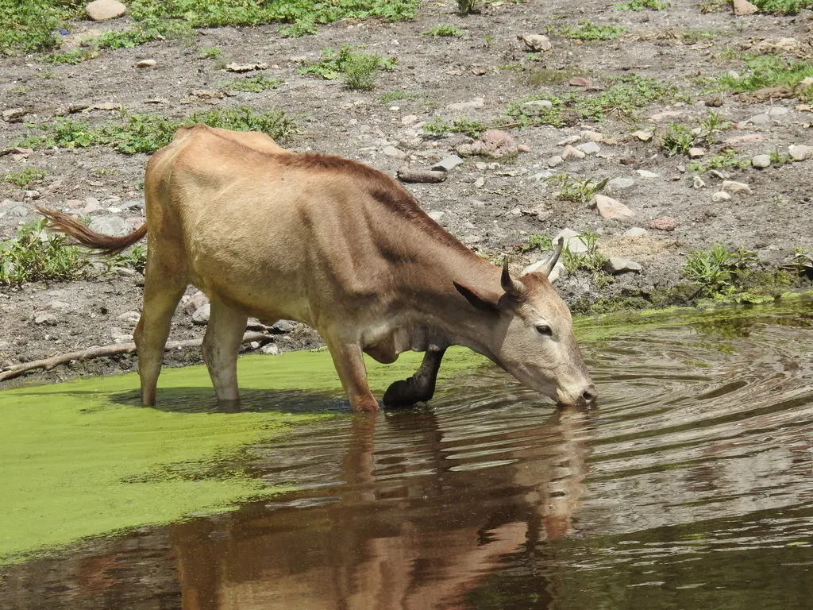

Правда ли, что коровы ложатся, когда собирается дождь?
1. Коровы чувствительны к увеличению влажности и ложатся на траву, чтобы она оставалась сухой.
2. По другой примете, коровы ложатся перед дождём на землю, чтобы облегчить свои желудочки, которые чувствуют изменения давления атмосферы, вызванные дождём.
3. Есть ещё одна примета, говорящая о том, что ноги у коровы обладают микропористостью, которые очень быстро впитывают воду. Когда приближается дождь, ноги коровы всё больше впитывают эту влагу и размягчаются. И тогда она ложится на землю, потому что уже не может удерживать свой вес.
Согласно недавнему опросу Метеорологического управления Великобритании, более 60% британцев считают, что лежание коров (2) — верный признак дождя. Возможно, наиболее распространенная теория заключается в том, что коровы способны чувствовать приближение дождя либо по повышенной влажности воздуха, либо по сопутствующему падению атмосферного давления, и ложатся, чтобы сохранить участок сухой травы для выпаса. Другая теория появилась в 2013 году, когда исследование, проведенное в США, показало, что коровы склонны стоять в жаркую погоду, поскольку большее обнажение кожи позволяет им эффективнее охлаждаться. Это натолкнуло некоторых на гипотезу, что похолодание в воздухе, которое часто бывает перед дождем, может побудить коров лечь, чтобы сохранить тепло.
Правда ли, что коровы ложатся, когда собирается дождь?
1. Коровы чувствительны к увеличению влажности и ложатся на траву, чтобы она оставалась сухой.
2. По другой примете, коровы ложатся перед дождём на землю, чтобы облегчить свои желудочки, которые чувствуют изменения давления атмосферы, вызванные дождём.
3. Есть ещё одна примета, говорящая о том, что ноги у коровы обладают микропористостью, которые очень быстро впитывают воду. Когда приближается дождь, ноги коровы всё больше впитывают эту влагу и размягчаются. И тогда она ложится на землю, потому что уже не может удерживать свой вес.
Согласно недавнему опросу Метеорологического управления Великобритании, более 60% британцев считают, что лежание
коров (2) — верный признак дождя.
Возможно, наиболее распространенная теория заключается в том, что коровы способны чувствовать приближение дождя либо по повышенной влажности воздуха, либо по сопутствующему падению атмосферного давления, и ложатся, чтобы сохранить участок сухой травы для выпаса. Другая теория появилась в 2013 году, когда исследование, проведенное в США, показало, что коровы склонны стоять в жаркую погоду, поскольку большее обнажение кожи позволяет им эффективнее охлаждаться. Это натолкнуло некоторых на гипотезу, что похолодание в воздухе, которое часто бывает перед дождем, может побудить коров лечь, чтобы сохранить тепло.
Однако, по правде говоря, нет никаких научных подтверждений этой части погодного фольклора. Наиболее вероятным объяснением любой корреляции между поведением коров и погодой, вероятно, является простое совпадение – коровы проводят до половины своего времени лежа (2), либо для отдыха, либо для пережевывания жвачки, так что вероятность того, что они лягут в любой момент, идет дождь или светит солнце, составляет 50: 50. Как стадные животные, коровы склонны подражать поведению друг друга, повышая вероятность того, что вы увидите целое стадо, лежащее перед ливнем.
1
2
3

Умвельт